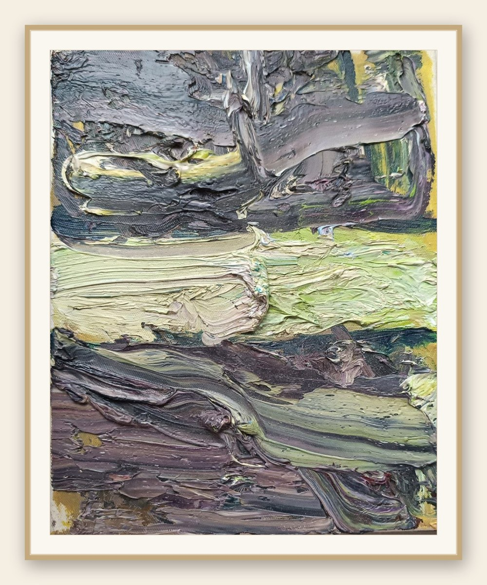
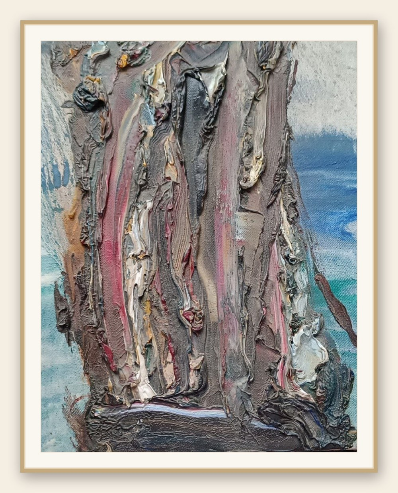
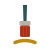
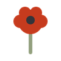
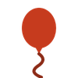
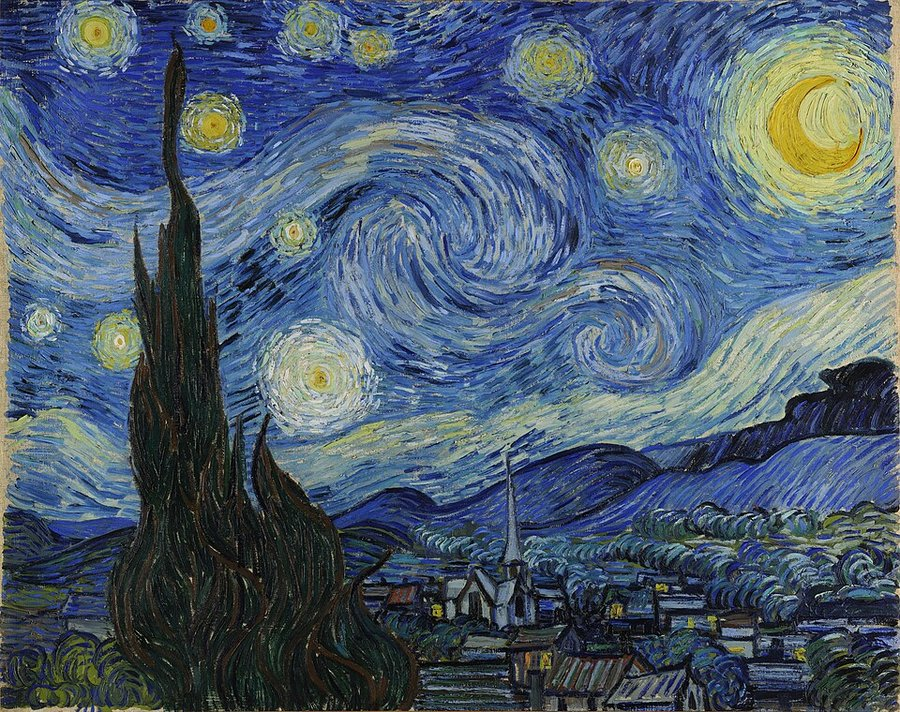
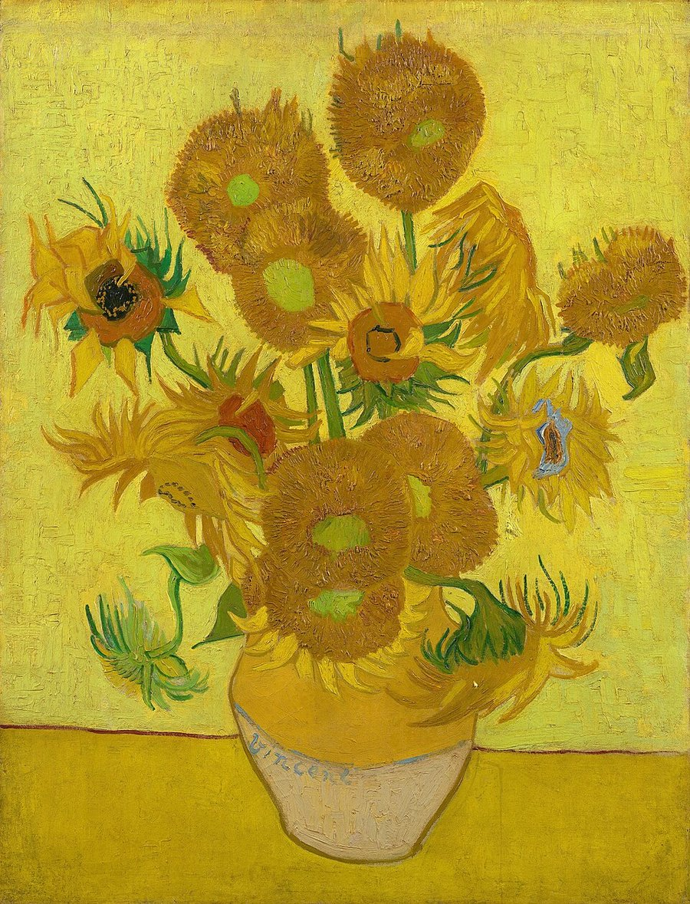
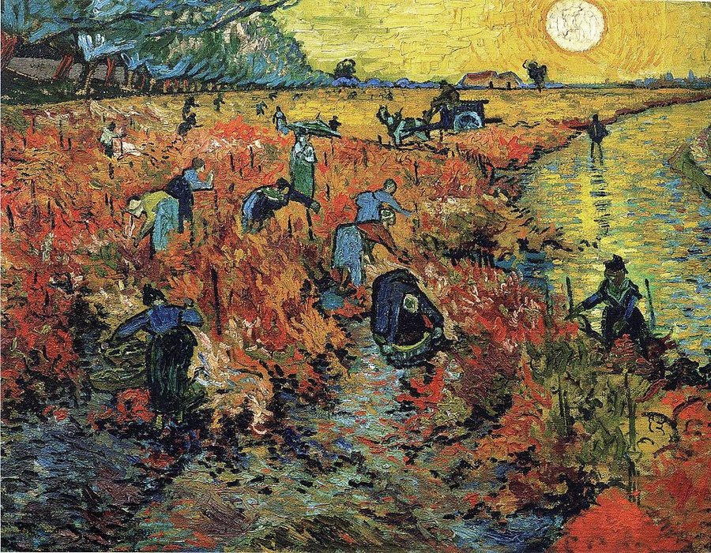
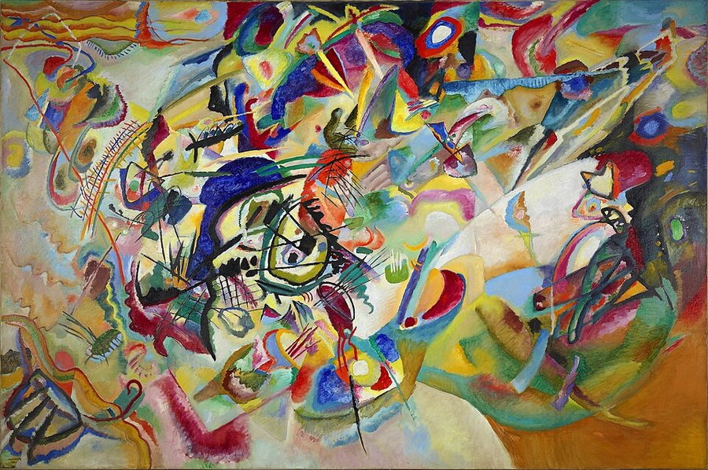
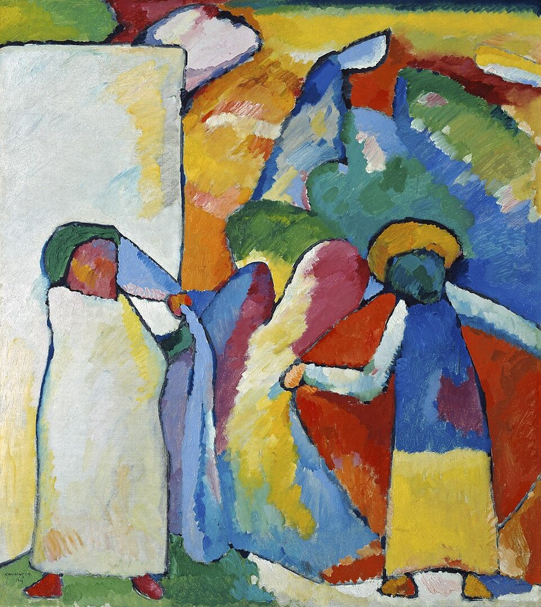

Цвет — это магия, гайз! И я говорю это предельно серьезно, насколько может человек с кадмием красным под ногтями.
Для меня цвет — это язык, на котором наше настроение начинает говорить раньше слов. Цвет не объясняет, он дотрагивается до сердца. Не убеждает, а откликается в душе. Проходит мимо рационального, как ребенок, и оказывается там, где живут воспоминания, желания, страхи и что-то еще… Что-то, что мы до поры не умеем назвать.
Вон та картина справа называется «Сопротивление». Угадайте, почему. Я задумывала ее совсем другой: светлее, тише, приличнее. А она уперлась. Слой за слоем спорила со мной, пока я не сдалась и не разрешила ей быть такой, какой она хотела. Победила картина. Поэтому и название такое — это она про меня, а не я про нее.

Каждый цвет — это отдельная вселенная. Один возвращает в детство, другой пахнет морем, третий напоминает о человеке, которого нет рядом, а так хотелось бы, чтобы вдруг оказался. Иногда хватает одного оттенка, чтобы внутри ожил целый мир. Цвет умеет открывать двери в те комнаты памяти и души, куда мы редко заглядываем.
Тем, кто владеет ремеслом цвета, вовсе не обязательно рассказывать историю словами. Достаточно нескольких цветовых комбинаций, чтобы мы почувствовали тревогу или покой, ожидание или свободу. Мы не читаем картину. Мы входим в нее.
Проводник — Йоханнес Иттен
В путешествиях по цветовым мирам я разбиралась вместе с проводником: Йоханнесом Иттеном, преподавателем Баухауса, художником и одним из самых глубоких исследователей природы цвета. Между прочим, тот еще чудак: он заставлял студентов дышать и размахивать руками, прежде чем разрешал взять кисть. Над ним посмеивались. А он просто знал: цвет начинается не в тюбике, а в человеке. Иттен писал:
Знания, полученные из книг или от учителей, как сказано в Ведах, сравнимы с путешествием в повозке. Но как только дорога заканчивается, ты вынужден покинуть ее и идти дальше пешком.
Мне кажется, это не только о знании. Можно выучить теорию цвета, гармонии, контрасты и композицию. Но однажды наступает момент, когда никакие книги больше не помогают. Остаетесь только вы, картина и цвет. Вот тут и начинается настоящее путешествие. И ехать в повозке, и идти пешком, и даже самой быть повозкой — попробуем все.
Практика на выходные: «Съешьте свой цвет»
Давайте превратим ближайшие дни в небольшую практику арт-коучинга. Специальных приготовлений не нужно, а приключение будет цветное и яркое, получите удовольствие. Смешное снаружи, серьезное внутри — как все лучшее в арт-коучинге.
- Утром спросите себя: какого цвета мне сегодня хочется? Не какой еды — какого цвета.
- Соберите завтрак только из него. Полностью, без компромиссов. Оранжевый? Морковь, рис с карри, хурма, облепиховый чай. Зеленый? Авокадо, огурец, виноград, щавелевый суп. Красный? Ну, вы поняли.
- Бежевая овсянка не считается. (Если очень тянет на бежевое — у меня к вам вопросы. А у Лены, как у коуча, их будет еще больше.)
- Съешьте медленно. Красиво. Можно сфотографировать до — и похвастаться нам в комментариях.
- Вопрос со звездочкой: почему именно этот цвет «захотел» быть съеденным сегодня? Что он отражает в вашем состоянии? Вот здесь кулинария заканчивается и начинается арт-коучинг.
Возможно, окажется, что цвет — это не свойство предметов, а ваше мироощущение в данный момент. Мы каждый день бессознательно выбираем цвета, отвергаем, живем в них — а теперь еще и едим. Цвет — это пространство встречи внешнего мира с внутренним.




Что почитать и посмотреть
Книги
- Йоханнес Иттен. «Искусство цвета» — классика о логике и природе цвета.
- Света Максимова, Лива Тагира. «Цветовой интеллект» — как цвет влияет на нас и как развивать чувствительность к нему.
- Глубже — книжная полка Лены Семеновой «Цвет — язык души» на Яндекс Книгах.
Классики цвета
Их работы — общественное достояние. Нажмите на любую, чтобы узнать больше об авторе.





А ещё обязательно Анри Матисс — чистый цвет как чистая радость: фовизм и вырезки из бумаги.
Современные — смотреть по ссылке
- Дэвид Хокни (Великобритания) — радикальный, радостный цвет.
- Мироко Матико (Япония) — животные и растения взрывной палитры.
- Уильям Маккиннон (Австралия) — психологические пейзажи.
- Мартин Жарр (Франция) — красочный мир между явью и сном.
Фильмы про цвет
- «Ван Гог. С любовью, Винсент» (2017) — первый полнометражный фильм, целиком нарисованный маслом.
- «Ив Кляйн. Синяя революция» (2006, документальный) — про художника, влюбленного в один свой синий.
Приходите к нам с Леной на арт-коучинговую мастерскую по цвету — искупаемся в цвете вместе. Напишите нам, расскажем, когда ближайшая.